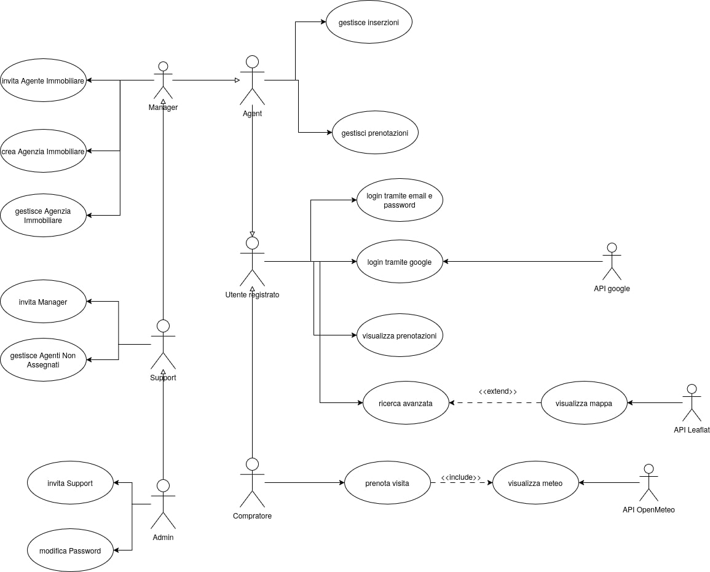

DietiEstates25
Sistema Distribuito per la Gestione Immobiliare Cloud-Native
Corso
Ingegneria del Software
A.A. 2024/2025
Gruppo 041
Gennaro Ventrone
Mariano Sommella
Analisi dei Requisiti
Specifica formale degli attori, vincoli qualitativi e regole di business.
Identificazione degli Attori
Requisiti Non Funzionali
- Paradigma OOP: Modularità e manutenibilità del codice
- Prestazioni: Tempo di risposta <2s (99% query)
- Usabilità: UI intuitiva, Human-Centered Design
- Sicurezza: Protocolli sicuri per credenziali e dati sensibili
- Affidabilità: SLA 99% uptime mensile
Requisiti di Dominio
- • Invitation-Only: Registrazione ruoli privilegiati tramite link univoco via email
- • Conformità Normativa: Classe energetica obbligatoria (D.Lgs 192/2005)
- • Notifiche Proattive: Aggiornamenti automatici stato appuntamenti
- • Supporto Decisionale: Integrazione mappe interattive e previsioni meteo
Accessibilità
Utilizzo immediato senza formazione pregressa
Piena operatività con training minimo
Metriche di Qualità
Attori e Casi d'Uso
Distinzione architetturale tra flussi pubblici e aree protette.
Area Pubblica (Customer)
Accesso anonimo per ricerca e visualizzazione. Registrazione richiesta solo per interazioni (Prenotazione visite, Messaggistica).
Area Staff (RBAC)
- Admin: Gestione Agenzia e Staff.
- Manager: Supervisione inserzioni e reportistica.
- Agent: Operatività quotidiana (Appuntamenti, Immobili).
Gerarchia Privilegi


Architettura Logica
3-Tier Distributed Architecture
Presentation Layer
Single Page Application (SPA) Angular 20.
Client-side rendering, Lazy Loading.
Application Layer
REST API Stateless (Node.js + Express v5).
Container Dockerizzato, Scalabilità orizzontale.
Data Layer (Hybrid-Cloud)
PaaS NeonDB (Serverless Postgres) + AWS S3.
ACID Compliance + Scalable Blob Storage.
Stack Unificato: TypeScript
Scelto come linguaggio unificante per Frontend (Angular) e Backend (Node.js), garantendo:
- Type-Safety End-to-End: Prevenzione errori a compile-time.
- Condivisione Codice: Interfacce e DTO condivisi tra client e server.
- Ecosistema Coerente: Stessi strumenti di linting e testing.
Struttura del Server (Back-end)
Il server è stato sviluppato seguendo un'architettura a tre livelli, con una chiara separazione delle responsabilità:
Architettura a 3 Livelli
Riceve le richieste HTTP, valida i dati attraverso Zod (express-zod-safe) e li invia al livello successivo. Gestisce il formato delle risposte JSON e gli status code HTTP appropriati.
Contiene la logica di business e le regole del dominio. Gestisce eventuali errori, orchestrando chiamate a più repository e servizi esterni. Implementa la logica RBAC per il controllo degli accessi.
Interagisce direttamente con il database attraverso Drizzle ORM, eseguendo operazioni CRUD (Create, Read, Update, Delete). Astrae completamente i dettagli SQL dal resto dell'applicazione.
Pattern Architetturali Implementati
-
•
Repository Pattern (DAO): Incapsula le query Drizzle, fornendo un'interfaccia astratta per l'accesso ai dati.
-
•
Strategy Pattern: Implementato via Passport.js per gestire strategie di autenticazione multiple (Local, Google OAuth, JWT).
-
•
Chain of Responsibility: Pipeline sequenziale di middleware Express per logging, autenticazione e validazione.
-
•
Singleton Pattern: Gestione di un'unica istanza condivisa per la connessione al database (Drizzle Client).
Servizi e Tecnologie Utilizzate
Node.js + TypeScript
Node.js è un runtime JavaScript basato su V8 di Chrome, che permette l'esecuzione di JavaScript lato server. TypeScript estende JavaScript con tipizzazione statica, prevenendo errori a compile-time e migliorando la manutenibilità del codice.
Express.js v5
Framework web minimale e flessibile per Node.js. Fornisce funzionalità per applicazioni web e API. Gestisce routing, middleware e parsing HTTP. La versione 5 migliora la gestione delle Promise e degli errori asincroni.
Zod & express-zod-safe
Libreria per la validazione rigorosa degli input a runtime. Zod permette di definire schemi che agiscono anche come definizioni di tipo TypeScript, garantendo che i dati in ingresso rispettino il formato atteso prima di raggiungere la logica di business.
PostgreSQL + PostGIS (NeonDB)
PostgreSQL è un database relazionale open-source ACID-compliant. PostGIS aggiunge capacità geospaziali per query di prossimità. Ospitato su NeonDB, piattaforma serverless PaaS con auto-scaling e branching database.
Drizzle ORM
ORM moderno "TypeScript-first". La gestione delle migrazioni avviene in modalità "Code-First" tramite Drizzle Kit.
Amazon S3
Storage scalabile per immagini proprietà e loghi agenzie. Offre durabilità, disponibilità garantita e integrazione CDN. Supporta versioning, lifecycle policies e controllo accessi IAM. Upload streaming via multer-s3 senza salvataggi temporanei.
Passport.js + JWT + bcrypt
Passport.js è middleware autenticazione modulare per Express. Supporta 500+ strategie (Local, OAuth, JWT). Integrato con bcrypt.js per hashing password con salting automatico. JWT gestisce sessioni stateless per scalabilità orizzontale. Sistema RBAC per controllo accessi granulare.
Nodemailer
Libreria per l'invio di email transazionali asincrone (es. conferme appuntamenti, inviti).
Struttura del Client (Front-end)
L'architettura del client è suddivisa seguendo il pattern Component-Based Architecture con separazione delle responsabilità:
Component-Based Architecture
I Servizi Angular gestiscono i dati e la logica di business. Comunicano con il backend tramite HTTP e gestiscono lo stato applicativo locale.
Il template HTML definisce la struttura e il CSS lo stile, privi di logica complessa. Utilizzano direttive Angular per il binding reattivo.
La classe TypeScript del componente espone proprietà e metodi alla View tramite Data Binding. Gestisce eventi e interazioni utente.
Pattern Architetturali Frontend
-
•
Component-Based Architecture: L'interfaccia è suddivisa in componenti indipendenti e riutilizzabili (es. Navbar, PropertyCard).
-
•
Observer Pattern: Utilizzato tramite RxJS per sottoscrivere e reagire ai cambiamenti di stato (es. aggiornamento lista immobili).
-
•
Inversion of Control (IoC) & DI: Angular gestisce la creazione e l'iniezione delle dipendenze (es. servizi API) nei componenti.
-
•
Wrapper Pattern: Utilizzato per incapsulare librerie esterne (es. Leaflet) in componenti Angular per facilitarne l'uso e il testing.
Servizi e Tecnologie Front-end
Angular 20
Framework per Single Page Application (SPA). Utilizza TypeScript, componenti riutilizzabili e dependency injection.
RxJS
Libreria per la programmazione reattiva basata su flussi di eventi (Observable). Gestisce chiamate HTTP asincrone e stato dell'applicazione.
Tailwind CSS
Framework CSS utility-first per styling rapido e responsivo direttamente nel markup HTML.
FullCalendar
Libreria per la gestione visuale degli appuntamenti su griglia temporale. Migliora l'operatività degli agenti rispetto a liste tabellari.
Quill
Editor di testo arricchito per la formattazione delle descrizioni immobili. Integrato con ngx-markdown per rendering sicuro e sanitizzato.
Lucide Angular
Set di icone vettoriali (SVG) ottimizzate per il tree-shaking, garantendo leggerezza e coerenza visiva.
ngx-toastr
Sistema di notifiche "Toast" per feedback immediato e non intrusivo (es. conferme salvataggio, errori), migliorando la visibilità dello stato del sistema.
Figma
Strumento di design collaborativo per la prototipazione dell'interfaccia utente (UI) e dell'esperienza utente (UX).
Servizi Esterni & Integrazioni
Orchestrazione di servizi specializzati per funzionalità avanzate.
-
PostGIS & Leaflet
PostGIS estende PostgreSQL per dati geospaziali. Leaflet è una libreria JS open-source per mappe interattive mobile-friendly.
-
Nodemailer
Modulo per applicazioni Node.js per l'invio di email. Supporta SMTP e vari servizi di trasporto.
-
OpenMeteo
API meteorologica open-source per dati meteo storici e previsioni. Non richiede chiavi API per uso non commerciale.
Design System & UX
Psicologia del Colore e Gerarchia Visiva per ridurre il carico cognitivo.
La Palette Cromatica
Combinazione fondata sul contrasto tra toni scuri (Dark Grey) e spazio bianco, seguendo la regola del 60-30-10.
Dominante (60%)
Eleganza, Autorità, Stabilità
Secondario (30%)
Struttura, Card, Aree Funzionali
Accento (10%)
Azione, Feedback, Focus
Principi HCI Applicati
-
Gerarchia Visiva: Il nero definisce la struttura, il bianco garantisce leggibilità.
-
Carico Cognitivo Ridotto: Design minimale per evitare il "visual clutter".
-
Contrasto Funzionale: Colori semantici (Verde/Rosso) emergono solo per feedback critici.
UI Abstraction: Dark Mode & Split Layout
Interfacce & Workflow
Accesso & Onboarding
Layout Split-Card basato sul principio della "Regione Comune".
- Area Funzionale: Input isolati su sfondo chiaro per focus.
- Area Emozionale: Branding su sfondo scuro per accoglienza.
- Transizioni: Fade-in per ridurre il carico cognitivo iniziale.
Dashboard & Mappa Interattiva
Home Page come hub operativo con mappa Sticky.
- Feedback Dinamico: Hover sulla card illumina il pin sulla mappa.
- Mapping Naturale: Correlazione istantanea dati-posizione.
- Ricerca Semantica: Indicizzazione full-text delle descrizioni.
Listing Property (Single Page)
Modulo a pagina singola per visione d'insieme, preferito al Wizard.
- Vincoli di Norman: Tasto "List" disabilitato se form incompleto.
- Input Guidati: Radio button per scelte mutuamente esclusive.
Gestione Appuntamenti
Visualizzazione Duale (Toggle View) per flessibilità operativa.
Persistenza dei Dati
Schema ER & Drizzle ORM
Lo schema dati è stato definito utilizzando Drizzle ORM (vedi src/db/schema/). Questa scelta garantisce Type-Safety e Zero-overhead.
Tabelle Principali
- users
- agencies
- posts (inserzioni)
- appointments
- invites
Funzionalità Avanzate
-
Relazioni: Definizione esplicita (es.
one-to-manyAgency-Agents). -
Tipi Custom:
pgEnumper stati,customTypeper dati PostGIS.

Diagrammi delle Classi
Analisi strutturale e scelte implementative per i principali casi d'uso del sistema.
Login & Autenticazione
Gestione credenziali e sessioni sicure.
Registrazione
Creazione nuovi account utente/agenzia.
Gestione Profilo
Modifica password e dati personali.
Ricerca Immobili
Filtri avanzati e geolocalizzazione.
Gestione Inserzioni
CRUD immobili e upload media.
Appuntamenti
Scheduling e gestione calendario.
Inviti
Gestione inviti e notifiche.
Agenzie
Gestione agenzie e agenti.


Diagrammi di Sequenza
Modellazione dinamica dell'ordine temporale degli eventi. Cruciale per tradurre i requisiti funzionali in logica tecnica.
1. Registrazione Utente
Validazione Zod, Check Email, Hashing Password, JWT Token.
2. Creazione Inserzione
Geolocalizzazione Nominatim, Upload S3, Salvataggio DB.
3. Ricerca Immobile
Query SQL ottimizzata, Filtri dinamici, Paginazione.
4. Gestione Appuntamenti
Ciclo di vita (Pending -> Accepted/Rejected), RBAC Check.


DevOps & Quality Assurance
GitHub: Versioning & CI/CD
Piattaforma centralizzata per controllo versione distribuito (Git) e automazione completa del ciclo di sviluppo.
Esecuzione automatica su ogni Push/PR. Merge consentito solo con tutti gli stage verdi.
SonarQube: Analisi Statica Continua
Scansione automatica del codice per monitorare debito tecnico e garantire Clean Code.
Open Issues
Open Issues
Open Issues
Errori logica → crash runtime. Priorità massima.
SQL Injection, XSS, CSRF. Security critical.
Violazioni best practices (complessità, naming).
Violazione DRY. Solo 1.3% del codebase duplicato.
Docker Multi-Stage Build
Ottimizzazione immagini per portabilità, riproducibilità e sicurezza.
- • Node.js 20 completo
- • Dev + Prod dependencies
- • Compilazione TS → JS
- • Node.js 20-slim
- • Solo prod dependencies
- • Artefatti /dist
Gestione automatica tramite docker-compose.yml
- Container API Backend (porta 5003)
- Container PostgreSQL Database
- Network bridge isolato
Strategia di Verifica
Verifica Statica (Code Analysis)
Analisi continua per garantire manutenibilità e prevenire difetti (Fault Avoidance).
Verifica Dinamica (Unit Testing)
Approccio Risk-Based Testing focalizzato sui moduli Core Business critici.
-
Black-Box Testing: Partizione in Classi di Equivalenza.
-
Test in Isolation: Mocking di DB e servizi esterni con Jest.
- deleteAppointment (Sicurezza RBAC)
- getPostsNearby (Logica Geospaziale)
- getAllAppointmentsForCalendar (Query Dinamiche)
Validazione & Usabilità
Validazione Sperimentale
Test condotto su un campione eterogeneo di 23 utenti (Desktop, Mobile, Tablet).
SUS Score
"Eccellente" - Grado A
83.3% Apprendibilità
Expert Review
Basata sulle 8 Regole d'Oro di Shneiderman.
- Coerenza Layout
- Feedback Informativo
- Prevenzione Errori
Richieste Evolutive (Feedback)
Conclusioni
DietiEstates25 rappresenta un sistema moderno, type-safe e scalabile, progettato seguendo rigorosi principi di Ingegneria del Software.
Architettura Pulita
Separazione delle responsabilità e pattern consolidati.
Security by Design
RBAC, Validazione Zod e Protezione dati.
UX Curata
Validata empiricamente con utenti reali.